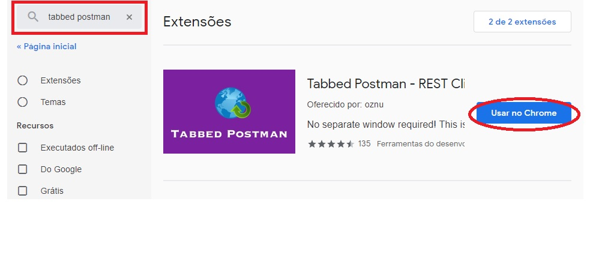
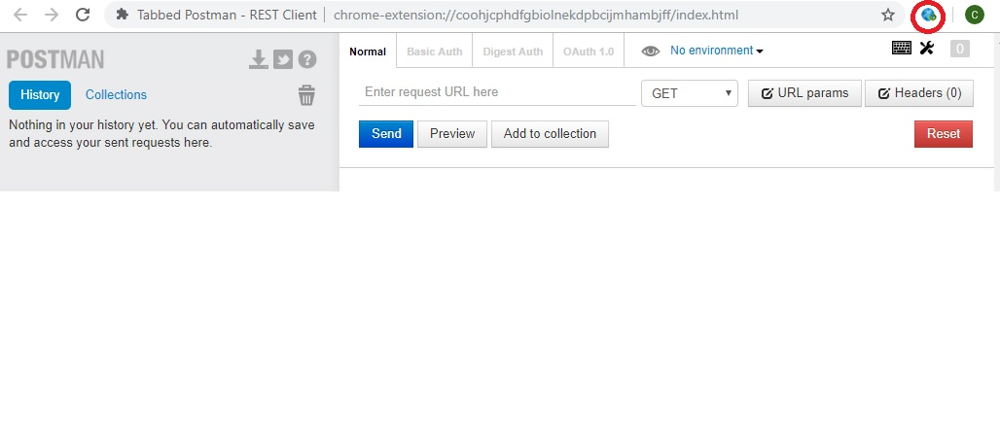
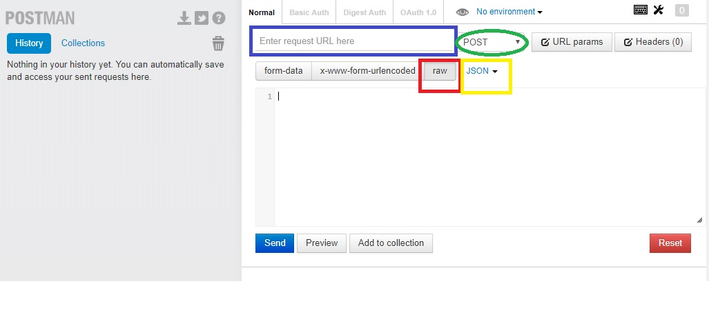

Carlos Adriano
APRENDENDO A USAR O APLICATIVO POSTMAN
23 de Janeiro de 2019
Neste post, você vai aprender como enviar dados no formato json para o seu web app. Para isso, vamos usar o Tabbed Postman, uma extensão do Google Chrome para fazer requisições http usando os métodos GET e POST.
Comece acessando a Chrome Web Store e pesquise por tabbed postman. Se tudo der certo, você vai ver a tela abaixo. Clique no botão Usar no Chrome.
Clique em adicionar extensão.

A extensão vai ser adicionada com sucesso. A seguir, clique no ícone e vai ver a tela abaixo.
Para enviar dados no formato json, use o endereço do seu web app no local em azul, selecione POST no local em verde, clique em raw no local em vermelho e selecione JSON no local em amarelo.
Na imagem abaixo, você vai ver um exemplo de envio de um dado no formato json. Se precisar enviar mais dados, separe-os com ponto e vírgula.


Carlos Adriano
Estudante de Engenharia Elétrica e programador.